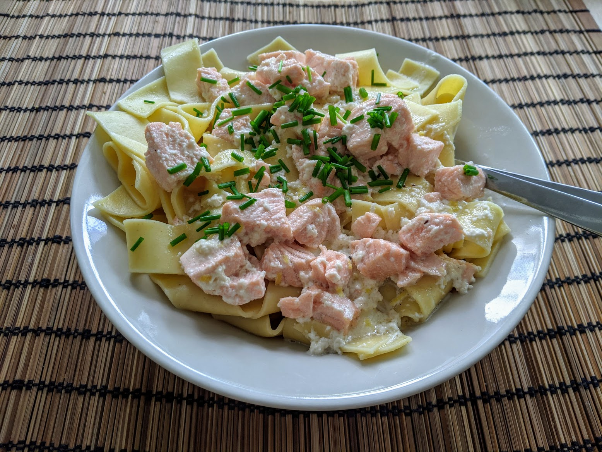

Pâtes au saumon

Pour deux personnes :
- Un filet de saumon (150g environ)
- 20cL de crème liquide (préférablement entière)
- 250g de pâtes (tagliatelles, par exemple)
- Une petite noix de beurre
- (Facultatif) Un trait de jus de citron
- (Facultatif) Une demi-phalange de gingembre
- Sel, poivre, muscade
- Faire fondre le beurre dans une casserole, ajouter la crème, cuire à feu moyen jusqu'à ce que ça fasse des bubulles. Attention, si on ne surveille pas la cuisson d'un coin de l'œil, ça va déborder.
- Pendant ce temps, faire cuire les pâtes, et couper le saumon en dés.
- Quand la crème est chaude, y mettre le saumon pour qu'il cuise doucement. Il faut que ça fasse des petites bubulles, sans que ça déborde. Saler, poivrer, muscader, ajouter un peu de jus de citron et du gingembre râpé si on en a.
- Quand les dés de saumon commencent à partir en miettes quand on appuie doucement dessus, c'est cuit. Mélanger la sauce et les pâtes égouttées, servir immédiatement.
Retour à la liste des recettes